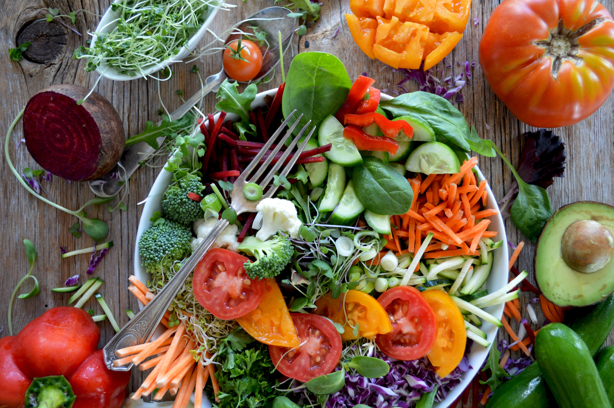

MyFoody redesign
Riprogettazione dell'esperienza d'acquisto per un servizio focalizzato sulla riduzione degli sprechi alimentari.

Orto di Sesto
Progettazione dell'interfaccia UI per un'azienda agricola di Sesto Fiorentino, con focus su storytelling visivo e design responsive.